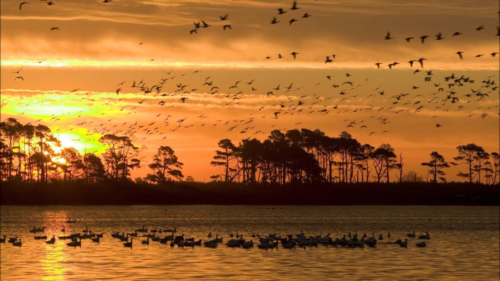
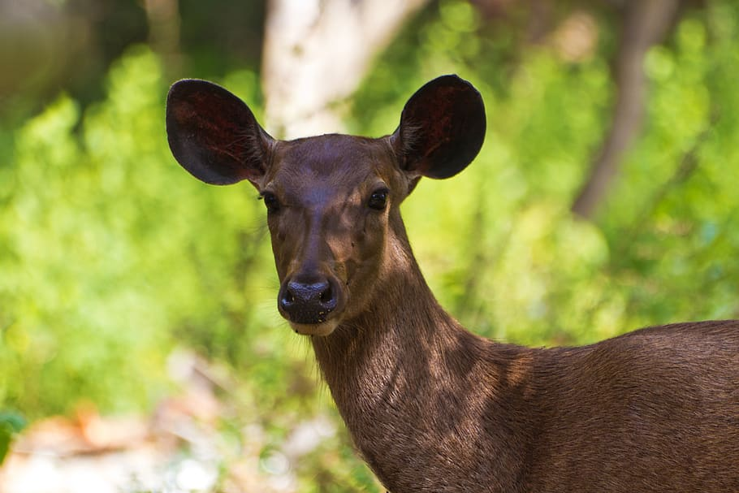
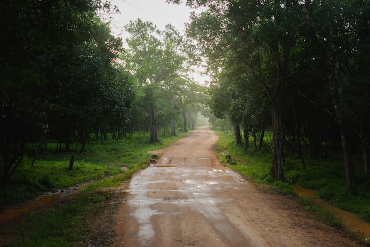
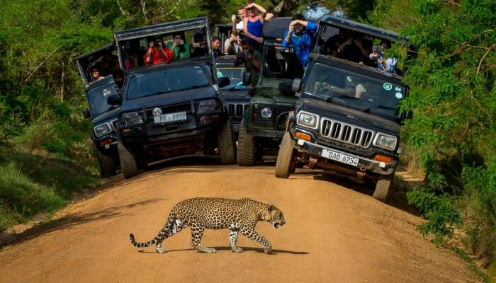
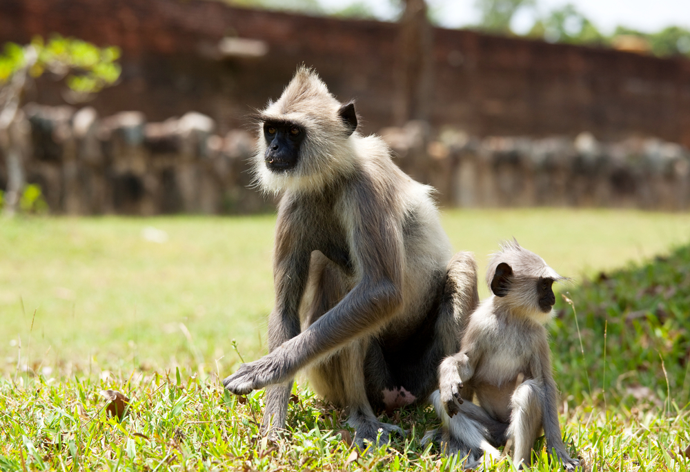
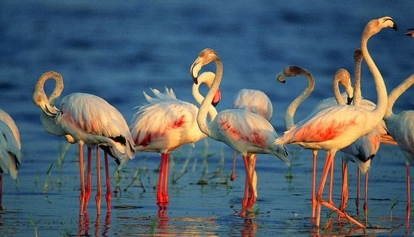
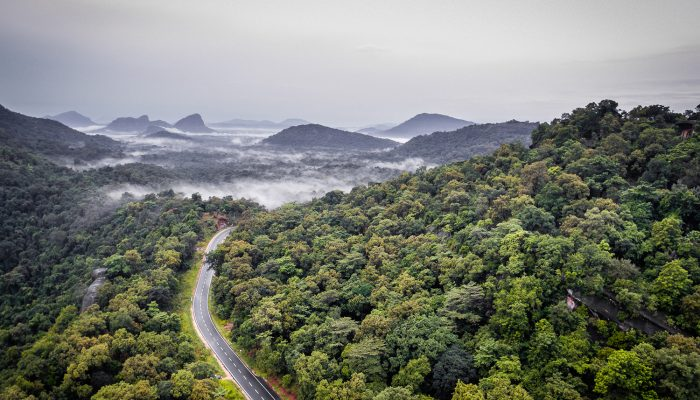
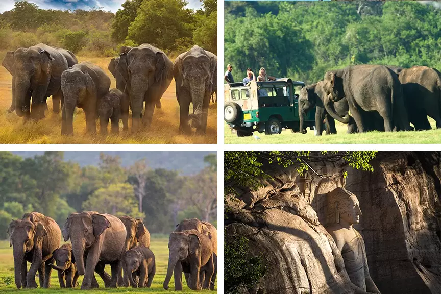
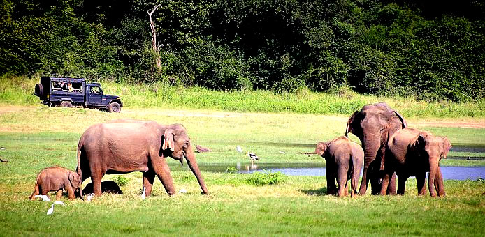

Wilpattu National Park, Also Known As "The Land Of Lakes"
Is A National Park In Sri Lanka Loacted On The Northwest Coast Lowland
Dry Zone Of Srilanka.
While Wilpattu was first designated a wildlife sanctuary as far back as 1905,
it wasn’t until February 1938 that this 13,500-hectare park was elevated to
national park status. Yet, its story begins much earlier than this. The copper
shoreline of the reserve, specifically at Kudiramalai, a rocky promontory,
is widely believed to have been the landing spot of the Indian Prince Vijaya
in the 5th century BC. He married Princess Kuveni of Sri Lanka, and together
they established the Sinhalese race. The region’s alternative name
– Thambapanni or the ‘colour of copper’ – came about due to the reddish
colour of the sand that stained the hands and feet of Prince Vijaya and his
700-odd followers when they came ashore.
The ruins of Kuveni’s palace is just one of 68 archeological sites within
Wilpattu National Park.






Nestled in the south-eastern corner of Sri Lanka, Yala National Park
is the island’s principle national park and offers the greatest diversity of animal
and birdlife in the country.
The habitats found in the park are wide-ranging, from freshwater lakes
to beaches, rocky outcrops to green plains and jungle. This creates an area
of immense biodiversity and is one of the world’s most popular destinations
to spot the elusive leopard, who love to lounge on the huge granite boulders
that dot the parkland.
The density of the leopard population within the park
makes sightings – although not guaranteed – a regular occurrence, and Yala
is an extremely popular attraction for this reason alone, despite its many
other highlights.
Yala was opened in 1900 as a wildlife sanctuary, it is now over 12,600km²
in size but only a fifth is open to visitors.
Its Also famous for its large number of leopards as well as water buffalos,
crocodiles and elephants.


Minneriya National Park is located 182 km away from Colombo in the
North Central Plains of Sri Lanka. The major city closest to Minneriya National
Park is Polonnaruwa.
The renovated vast ancient Minneriya Rainwater Reservoir that irrigates the
considerable area of the district of Polonnaruwa is the focal point of the
Minneriya National Park.
Being part of the elephant corridor which joins up
with Kaudulla and Wasgomuwa parks, Minneriya National Park gives the
opportunity to see herds of Elephants throughout the year. May to October
is the best period to visit Minneriya National Park in view of the famous
Gathering of the wild elephants
Minneriya National Park that covers an area of 8,889 hectares is of tropical
monsoon climate: annual rainfall is about 1146mm and mean annual
temperature is 27.5 centigrade. The altitude ranges from100m to 885m at the
top of Nilgala peak.
The vegetation of the park consists of tropical dry mixed evergreen forests,
abandoned chena lands, grasslands and wetlands. The open grasslands and
old chena lands are dominated by the many species of small shrub.
Here, We Have Presented A Table Which Summaraises Some Of The Animals And Plants Which Are There In Different Wildlife Areas.
| Area |
Animals |
Plants |
| Wilpattu |
Leopards (Panthera pardus kotiya)
Sloth bears (Melursus ursinus)
Elephants (Elephas maximus)
Spotted Deer
Water Buffalo (Bubalus bubalis)
Mugger Crocodiles
|
Salt Grass
Low Scrub Monsoon Forest
Palu (Manilkara hexandra)
Milla (Vitex altissima)
Weera (Drypetes sepiaria)
Ebony (Diospyros ebenum) |
| Yala |
Sri Lankan Elephant, Elephas maximus maximus
Toque Macaque Monkeys
Spotted Deer
Sloth bear (Melursus ursinus)
|
Wet Grassland
Ceylon Satinwood
Wild rice
indian blackberry
Rice paddies |
| Minneriya |
Wild Buffalo
Grey Langers
Purple-faced Leaf Monkeys
Indian Pangolin
|
Scrublands
Crotons
Wild rice
Calotropis gigantea
Bambusa bambos |